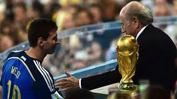
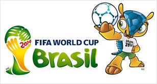
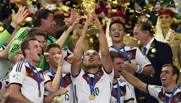
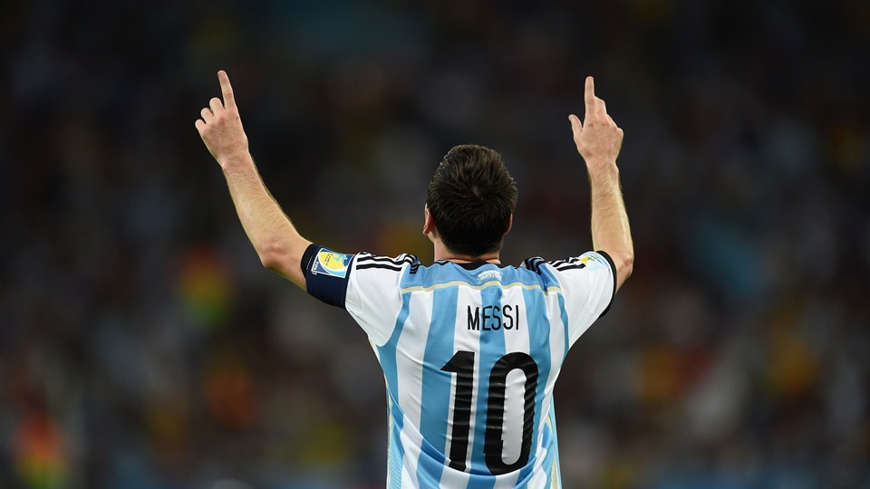
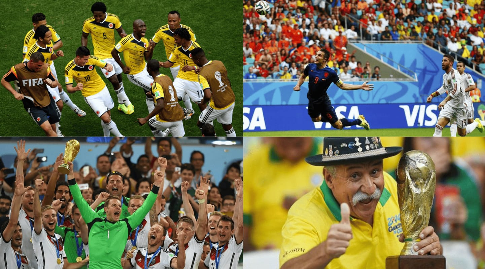
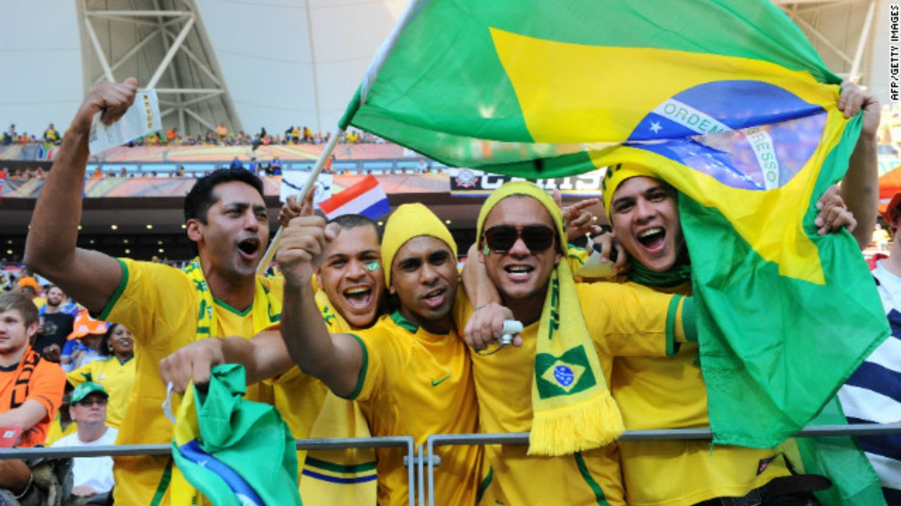
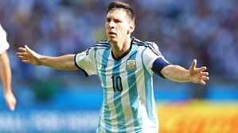
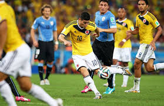
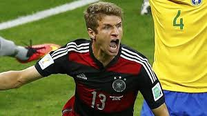
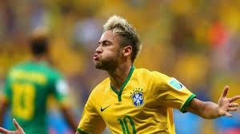

GRUPOS DEL MUNDIAL
| Brasil |
| Croacia |
| México |
| Camerún |
| España |
| Chile |
| Australia |
| Holanda |
| Colombia |
| Grecia |
| Costa de Marfil |
| Japón |
| Uruguay |
| Costa Rica |
| Inglaterra |
| Italia |
| Suiza |
| Ecuador |
| Francia |
| Honduras |
| Argentina |
| Bosnia-Herzegovina |
| Irán |
| Nigeria |
| Alemania |
| Portugal |
| Ghana |
| EEUU |
| Bélgica |
| Argelia |
| Rusia |
| República de Korea |
Fase eliminatoria

Octavos de final destacados:
• Costa Rica eliminó a Grecia en penales
• Alemania sufrió contra Argelia
• Argentina venció a Suiza con gol de Di María
• Bélgica eliminó a Estados Unidos
Cuartos de final:
• Alemania venció a Francia
• Argentina eliminó a Bélgica
• Brasil venció a Colombia (lesión de Neymar)
• Países Bajos eliminó a Costa Rica
Semifinales:
• Alemania 7-1 Brasil
• Argentina 0-0 Países Bajos (Argentina gana en penales)

Final y premios
Resultado final:
• Alemania 1-0 Argentina
• Gol: Mario Götze

Premios individuales:
• Balón de Oro: Lionel Messi
• Bota de Oro: James Rodríguez (6 goles)
• Guante de Oro: Manuel Neuer

Estadísticas del Mundial
• Total de goles: 171
• Asistencia: más de 3.4 millones de espectadores
• Audiencia global: miles de millones de personas
• Promedio de goles: uno de los más altos en la historia
Curiosidades y datos interesantes
• Alemania fue el primer equipo europeo en ganar en América
• El 7-1 es el resultado más impactante en semifinales
• Se usó el balón oficial llamado Brazuca
• Fue el Mundial con gran protagonismo de equipos “pequeños”
|
Conclusión ampliada
El Mundial 2014 es recordado como uno de los más completos: tuvo goles, sorpresas, drama, polémica y un campeón sólido. Alemania demostró que el trabajo en equipo y la disciplina pueden superar incluso la presión de jugar contra grandes selecciones.
Además, dejó lecciones importantes: ningún equipo es invencible, el fútbol sigue evolucionando y siempre habrá espacio para sorpresas como la de Costa Rica.
Bienvenido a nuestra pagina dedicado a la Copa Mundial de la FIFA Brasil 2014
Introduccion
La Copa Mundial de la FIFA 2014 fue mucho más que un torneo: fue una mezcla de cultura, polémica, talento individual y momentos históricos que marcaron un antes y un después en el fútbol mundial.

Contexto y organización del Mundial
Brasil fue elegido como sede en 2007. Fue la segunda vez que organizaba un Mundial (la primera fue en 1950).
Sedes principales
Se jugaron partidos en 12 ciudades, entre ellas:
Sedes principales
Se jugaron partidos en 12 ciudades, entre ellas:
• Río de Janeiro (Estadio Maracaná se jugo la final)
• São Paulo (partido inaugural)
• Brasilia
• Salvador
• Belo Horizonte
Polémicas
• Hubo protestas sociales por el alto gasto en estadios.• Se criticaron problemas de infraestructura.
• A pesar de ello, el evento fue exitoso en asistencia y audiencia global.

Equipos y figuras destacadas
Jugadores clave
• Lionel Messi: llevó a Argentina a la final

• James Rodríguez: goleador del torneo (6 goles)

• Thomas Müller: figura ofensiva de Alemania

• Neymar Jr.: estrella local antes de su lesión
